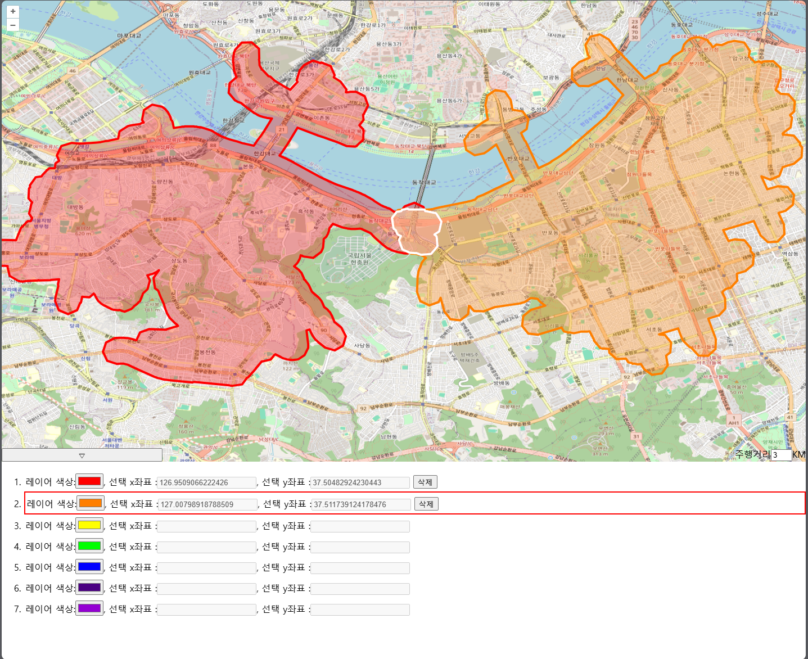

| 이름 | 정민기 |
|---|---|
| 출생년도 | 1992.01.15 |
| mkultra0115@gmail.com | |
| Github | https://github.com/mingi115 |
|
2021.04~2024.08 국가평생진흥원 |
컴퓨터공학과(졸업예정) |
|---|
| 자격증명 | 발행처 | 취득일 |
|---|---|---|
| 정보처리기사 | 한국산업인력공단 | 2024.06 |
| SQLD_SQL 개발자 | 한국데이터산업진흥원 | 2021.04 |
| 사무자동화산업기사 | 한국산업인력공단 | 2021.12 |
|
Backend |
|
|---|---|
|
Frontend |
|
|
Tools |
|
|
2021.04~2024.02 피타그래프 대리 |
데이터 거래 및 시각화 플랫폼 회사인 피타그래프에서 시계열을 포함한 공간 데이터 조회 플랫폼의 개발 및 유지보수를 주로 맡았습니다. 해당 회사에서 새로 개발하는 프로젝트에 참여함으로써 기획, 설계, 개발 모두 참여 할 수 있었고, 나아가 사용자 및 관리자의 편의를 위한 추가 기능을 스스로 기획하고 성능을 개선하는 다양한 경험을 할수 있었습니다. 하위 기술한 프로젝트에서 프론트엔드에서 Openlayers, JSTS, GeoServer를 활용한 지도 제어 부분을 맡았고 백엔드에선 API 서버 개발과 DB 데이터 관리를 맡았습니다. 하이퍼맵(20년4월 ~ 24년1월)
우리마을지도(21년6월 ~ 23년12월)
상권분석(20년6월 ~ 23년12월)
오작(23년4월 ~ 23년9월)
|
|---|
|
2022.12~2023.02 drivingDistance  |
통계청의 지도 서비스 SGIS에서 제공하는 주행거리 기능을 사용해보고 '아, 나도 이 기능을 구현해 보고 싶다.' 라는 생각으로 시작하게된 토이 프로젝트입니다. 특정 지점을 선택하여 설정한 주행거리 만큼의 주행거리 면적을 계산하여 지도위에 표시해주고 지점이 여러개일 경우 교집합을 구하여 하얀색 영역으로 표시해주는 기능을 가지고 있습니다. 해당 기능을 구현하기 위해 직접 PgRouting 공식문서를 번역하고 정리하며 걔발을 진행 해봤습니다. pg routing을 활용한 주행거리 면적계산.pdf |
|---|